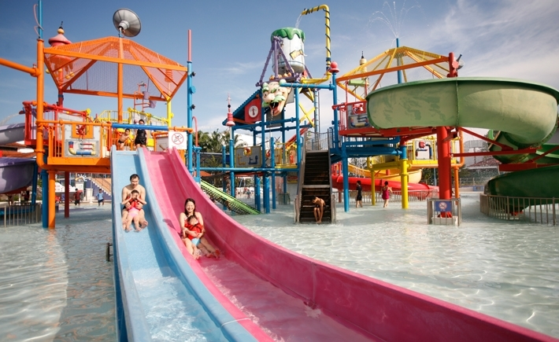
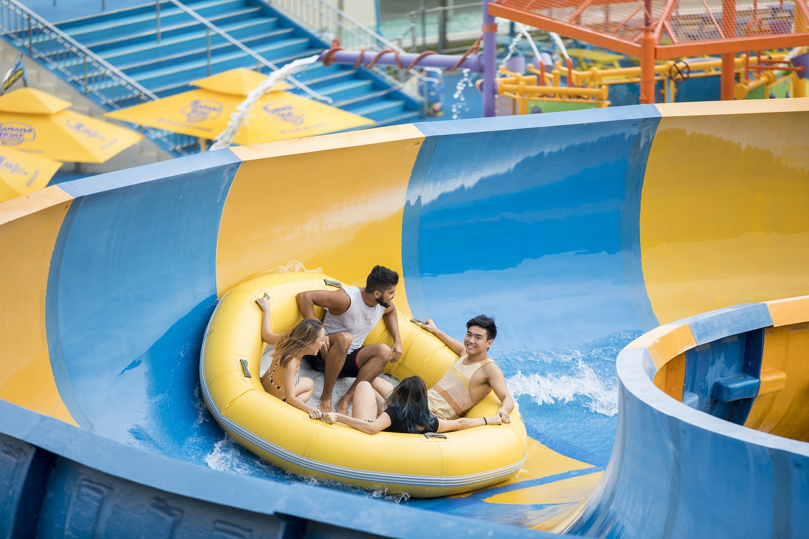

Rides and Attractions
Check out some of the rides and attractions available at Wild Wild Wet!
Kid-Friendly
Professor's Playground
Designed around the theme of an experimental laboratory, this outdoor water slide playground packs a myriad of classic fixtures such as slides, ladders, water cannons and even water fountains. At a comfortable depth of 0.3 metres, it is safe for children to explore and have fun in!
Kidz Zone

Give the young ones a taste of a wilder world at the all-new kids' water paradise, filled with exhilarating pint-sized versions of the big rides such as Royal Flush and Kraken Racers, designed to provide maximum entertainment to the little ones. This exciting outdoor wet play area is great as a children's activities play area, suitable for toddlers and children of all ages to frolic around in a safe and fun environment.
Moderate
Ular-Lah White Water Rafting
The first water slide raft ride in Southeast Asia, Ular-Lah is a super flume ride that offers you a chance to brave the rapids with five other companions. Ideal for thrill and adrenaline seekers, it's the closest thing you'll ever experience next to outdoor water rafting!
The Water Work Giant Spinning Water Slide

This twisty outdoor water slide comes in two parts: open and covered body slides, each with its own unique route and distinctive angles. This outdoor water slide is perfect for friendly races to see who can hit the landing pool first! Take on the challenge with your family and friends.
Extreme
Torpedo

The first of its kind in Singapore, the all-new Torpedo ride ejects you from an 18-metre high capsule right into a heart-stopping free fall, which propels you straight into a manic trajectory of hair raising twists and turns at mind-numbing speeds of up to 70km/hr. Get set for jaw-dropping, hair raising and adrenalin-pumping adventures on Torpedo Singapore as you drop from six-stories up and go on a 360 degrees loop in this thrilling ride!
Slide Up
Imagine plunging down a four-storey ramp slide, accelerating until you hit the deck and skimming across to soar on the opposite side. Now repeat that several times like a playground water slide until your momentum runs out!